Building things¶
Add and remove adsorbate¶
-
acat.build.actions.add_adsorbate(atoms, adsorbate, site=None, surface=None, geometry=None, indices=None, height=None, composition=None, orientation=None, tilt_angle=0.0, subsurf_element=None, all_sites=None)[source]¶ A general function for adding one adsorbate to the surface. Note that this function adds one adsorbate to a random site that meets the specified condition regardless of it is already occupied or not. The function is generalized for both periodic and non-periodic systems (distinguished by atoms.pbc).
- Parameters
atoms (ase.Atoms object) – Accept any ase.Atoms object. No need to be built-in.
adsorbate (str or ase.Atom object or ase.Atoms object) – The adsorbate species to be added onto the surface.
site (str, default None) – The site type that the adsorbates should be added to.
surface (str, default None) – The surface type (crystal structure + Miller indices) If the structure is a periodic surface slab, this is required. If the structure is a nanoparticle, the function enumerates only the sites on the specified surface.
geometry (str, default None) – The geometry type that the adsorbates should be added to. Only available for surface slabs.
indices (list or tuple) – The indices of the atoms that contribute to the site that you want to add adsorbate to. This has the highest priority.
height (float, default None) – The height of the added adsorbate from the surface. Use the default settings if not specified.
composition (str, default None) – The elemental of the site that should be added to.
orientation (list or numpy.array, default None) – The vector that the multidentate adsorbate is aligned to.
tilt_angle (float, default 0.) – Tilt the adsorbate with an angle (in degress) relative to the surface normal.
subsurf_element (str, default None) – The subsurface element of the hcp or 4fold hollow site that should be added to.
all_sites (list of dicts, default None) – The list of all sites. Provide this to make the function much faster. Useful when the function is called many times.
Example
To add a NO molecule to a bridge site consists of one Pt and one Ni on the fcc111 surface of a truncated octahedron:
>>> from acat.build.actions import add_adsorbate >>> from ase.cluster import Octahedron >>> from ase.visualize import view >>> atoms = Octahedron('Ni', length=7, cutoff=2) >>> for atom in atoms: ... if atom.index % 2 == 0: ... atom.symbol = 'Pt' >>> add_adsorbate(atoms, adsorbate='NO', site='bridge', ... surface='fcc111', composition='NiPt') >>> view(atoms) 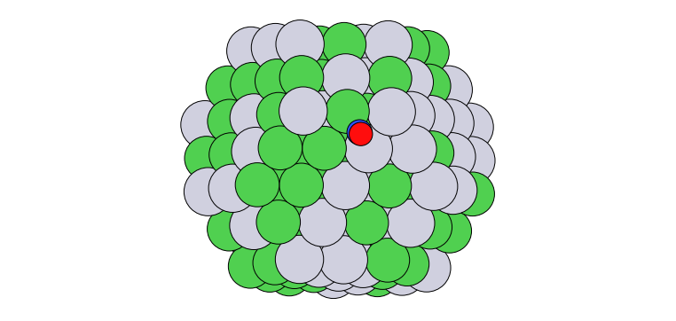
-
acat.build.actions.add_adsorbate_to_site(atoms, adsorbate, site, height=None, orientation=None, tilt_angle=0.0)[source]¶ The base function for adding one adsorbate to a site. Useful for adding adsorbate to multiple sites or adding multidentate adsorbates.
- Parameters
atoms (ase.Atoms object) – Accept any ase.Atoms object. No need to be built-in.
adsorbate (str or ase.Atom object or ase.Atoms object) – The adsorbate species to be added onto the surface.
site (dict) – The site that the adsorbates should be added to. Must contain information of the position and the normal vector of the site.
height (float, default None) – The height of the added adsorbate from the surface. Use the default settings if not specified.
orientation (list or numpy.array, default None) – The vector that the multidentate adsorbate is aligned to.
tilt_angle (float, default None) – Tilt the adsorbate with an angle (in degress) relative to the surface normal.
Example
To add CO to all fcc sites of an icosahedral nanoparticle:
>>> from acat.adsorption_sites import ClusterAdsorptionSites >>> from acat.build.actions import add_adsorbate_to_site >>> from ase.cluster import Icosahedron >>> from ase.visualize import view >>> atoms = Icosahedron('Pt', noshells=5) >>> atoms.center(vacuum=5.) >>> cas = ClusterAdsorptionSites(atoms) >>> fcc_sites = cas.get_sites(site='fcc') >>> for site in fcc_sites: ... add_adsorbate_to_site(atoms, adsorbate='CO', site=site) >>> view(atoms) 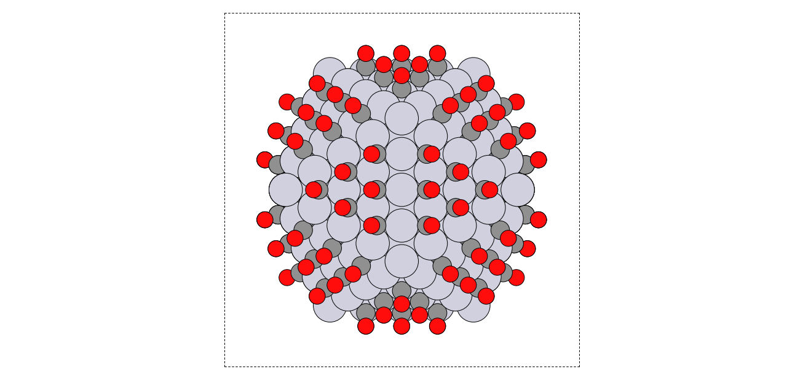
To add a bidentate CH3OH to the (54, 57, 58) site on a Pt fcc111 surface slab and rotate the orientation to a neighbor site:
>>> from acat.adsorption_sites import SlabAdsorptionSites >>> from acat.adsorption_sites import get_adsorption_site >>> from acat.build.actions import add_adsorbate_to_site >>> from acat.utilities import get_mic >>> from ase.build import fcc111 >>> from ase.visualize import view >>> atoms = fcc111('Pt', (4, 4, 4), vacuum=5.) >>> i, site = get_adsorption_site(atoms, indices=(54, 57, 58), ... surface='fcc111', ... return_index=True) >>> sas = SlabAdsorptionSites(atoms, surface='fcc111') >>> sites = sas.get_sites() >>> nbsites = sas.get_neighbor_site_list(neighbor_number=1) >>> nbsite = sites[nbsites[i][0]] # Choose the first neighbor site >>> ori = get_mic(site['position'], nbsite['position'], atoms.cell) >>> add_adsorbate_to_site(atoms, adsorbate='CH3OH', site=site, ... orientation=ori) >>> view(atoms) 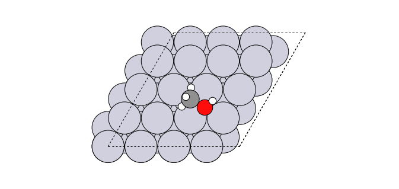
-
acat.build.actions.add_adsorbate_to_label(atoms, adsorbate, label, surface=None, height=None, orientation=None, composition_effect=False, all_sites=None)[source]¶
-
acat.build.actions.remove_adsorbates_too_close(atoms, adsorbate_coverage=None, surface=None, min_adsorbate_distance=0.5)[source]¶ Find adsorbates that are too close, remove one set of them. The function is intended to remove atoms that are unphysically close. Please do not use a min_adsorbate_distace larger than 2.
Generate adsorbate coverage patterns¶
-
class
acat.build.patterns.StochasticPatternGenerator(images, adsorbate_species, image_probabilities=None, species_probabilities=None, min_adsorbate_distance=1.5, adsorption_sites=None, surface=None, heights={'3fold': 1.3, '4fold': 1.3, '5fold': 1.5, '6fold': 0.0, 'bridge': 1.5, 'fcc': 1.3, 'hcp': 1.3, 'long-bridge': 1.5, 'ontop': 1.8, 'short-bridge': 1.5}, allow_6fold=False, composition_effect=True, dmax=2.5, species_forbidden_sites=None, species_forbidden_labels=None, fragmentation=True, trajectory='patterns.traj', append_trajectory=False, logfile='patterns.log')[source]¶ Bases:
objectStochasticPatternGenerator is a class for generating adsorbate coverage patterns stochastically. Graph isomorphism is implemented to identify identical coverage patterns. 4 adsorbate actions are supported: add, remove, move, replace. The function is generalized for both periodic and non-periodic systems (distinguished by atoms.pbc).
- Parameters
images (ase.Atoms object or list of ase.Atoms objects) – The structure to perform the adsorbate action on. If a list of structures is provided, perform adsorbate action on one of the structures in each step. Accept any ase.Atoms object. No need to be built-in.
adsorbate_species (str or list of strs) – A list of adsorbate species to be randomly added to the surface.
image_probabilities (listt, default None) – A list of the probabilities of selecting each structure. Selecting structure with equal probability if not specified.
species_probabilities (dict, default None) – A dictionary that contains keys of each adsorbate species and values of their probabilities of adding onto the surface. Adding adsorbate species with equal probability if not specified.
min_adsorbate_distance (float, default 1.5) – The minimum distance constraint between two atoms that belongs to two adsorbates.
adsorption_sites (acat.AdsorptionSites object, default None) – Provide AdsorptionSites object to accelerate the pattern generation. Make sure all the structures have the same periodicity and atom indexing. If composition_effect=True, you should only provide adsorption_sites when the surface composition is fixed.
surface (str, default None) – The surface type (crystal structure + Miller indices). Only required if the structure is a periodic surface slab.
heights (dict, default acat.settings.site_heights) – A dictionary that contains the adsorbate height for each site type. Use the default height settings if the height for a site type is not specified.
allow_6fold (bool, default False) – Whether to allow the adsorption on 6-fold subsurf sites beneath fcc hollow sites.
composition_effect (bool, default False) – Whether to consider sites with different elemental compositions as different sites. It is recommended to set composition=False for monometallics.
dmax (float, default 2.5) – The maximum bond length (in Angstrom) between the site and the bonding atom that should be considered as an adsorbate.
species_forbidden_sites (dict, default None) – A dictionary that contains keys of each adsorbate species and values of the site (can be one or multiple site types) that the speices is not allowed to add to. All sites are availabe for a species if not specified. Note that this does not differentiate sites with different compositions.
species_forbidden_labels (dict, default None) – Same as species_forbidden_sites except that the adsorption sites are written as numerical labels according to acat.labels. Useful when you need to differentiate sites with different compositions.
fragmentation (bool, default True) – Whether to cut multidentate species into fragments. This ensures that multidentate species with different orientations are considered as different coverage patterns.
trajectory (str, default 'patterns.traj') – The name of the output ase trajectory file.
append_trajectory (bool, default False) –
Whether to append structures to the existing trajectory. If only unique patterns are accepted, the code will also check graph isomorphism for the existing structures in the trajectory. This is also useful when you want to generate coverage patterns stochastically but for all images systematically, e.g. generating 10 stochastic coverage patterns for each image: from acat.build.patterns import StochasticPatternGenerator as SPG for atoms in images:
spg = SPG(atoms, …, append_trajectory=True) spg.run(ngen = 10)
logfile (str, default 'patterns.log') – The name of the log file.
Example
The following example illustrates how to generate 100 stochastic adsorbate coverage patterns with CO, OH, CH3 and CHO, based on 10 Pt fcc111 surface slabs with random C and O coverages, where CH3 is forbidden to be added to ontop and bridge sites:
>>> from acat.build.patterns import StochasticPatternGenerator as SPG >>> from acat.build.patterns import random_coverage_pattern >>> from ase.build import fcc111 >>> slab = fcc111('Pt', (6, 6, 4), 4, vacuum=5.) >>> slab.center() >>> images = [] >>> for _ in range(10): ... atoms = slab.copy() ... image = random_coverage_pattern(atoms, adsorbate_species=['C','O'], ... surface='fcc111', ... min_adsorbate_distance=5.) ... images.append(image) >>> spg = SPG(images, adsorbate_species=['CO','OH','CH3','CHO'], ... species_probabilities={'CO':0.3, 'OH': 0.3, ... 'CH3': 0.2, 'CHO': 0.2}, ... min_adsorbate_distance=1.5, ... surface='fcc111', ... composition_effect=False, ... species_forbidden_sites={'CH3': ['ontop','bridge']}) >>> spg.run(n_gen=100, actions='add') 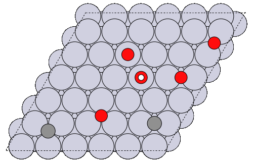
-
class
acat.build.patterns.SystematicPatternGenerator(images, adsorbate_species, min_adsorbate_distance=1.5, adsorption_sites=None, surface=None, heights={'3fold': 1.3, '4fold': 1.3, '5fold': 1.5, '6fold': 0.0, 'bridge': 1.5, 'fcc': 1.3, 'hcp': 1.3, 'long-bridge': 1.5, 'ontop': 1.8, 'short-bridge': 1.5}, allow_6fold=False, composition_effect=True, dmax=2.5, species_forbidden_sites=None, species_forbidden_labels=None, enumerate_orientations=True, trajectory='patterns.traj', append_trajectory=False, logfile='patterns.log')[source]¶ Bases:
objectSystematicPatternGenerator is a class for generating adsorbate coverage patterns systematically. This is useful to enumerate all unique patterns at low coverage, but explodes at higher coverages. Graph isomorphism is implemented to identify identical coverage patterns. 4 adsorbate actions are supported: add, remove, move, replace. The function is generalized for both periodic and non-periodic systems (distinguished by atoms.pbc).
- Parameters
images (ase.Atoms object or list of ase.Atoms objects) – The structure to perform the adsorbate action on. If a list of structures is provided, perform adsorbate action on one of the structures in each step. Accept any ase.Atoms object. No need to be built-in.
adsorbate_species (str or list of strs) – A list of adsorbate species to be randomly added to the surface.
min_adsorbate_distance (float, default 1.5) – The minimum distance constraint between two atoms that belongs to two adsorbates.
adsorption_sites (acat.AdsorptionSites object, default None) – Provide AdsorptionSites object to accelerate the pattern generation. Make sure all the structures have the same periodicity and atom indexing. If composition_effect=True, you should only provide adsorption_sites when the surface composition is fixed.
surface (str, default None) – The surface type (crystal structure + Miller indices). Only required if the structure is a periodic surface slab.
heights (dict, default acat.settings.site_heights) – A dictionary that contains the adsorbate height for each site type. Use the default height settings if the height for a site type is not specified.
allow_6fold (bool, default False) – Whether to allow the adsorption on 6-fold subsurf sites beneath fcc hollow sites.
composition_effect (bool, default False) – Whether to consider sites with different elemental compositions as different sites. It is recommended to set composition=False for monometallics.
dmax (float, default 2.5) – The maximum bond length (in Angstrom) between the site and the bonding atom that should be considered as an adsorbate.
species_forbidden_sites (dict, default None) – A dictionary that contains keys of each adsorbate species and values of the site (can be one or multiple site types) that the speices is not allowed to add to. All sites are availabe for a species if not specified. Note that this does not differentiate sites with different compositions.
species_forbidden_labels (dict, default None) – Same as species_forbidden_sites except that the adsorption sites are written as numerical labels according to acat.labels. Useful when you need to differentiate sites with different compositions.
enumerate_orientations (bool, default True) – Whether to enumerate all orientations of multidentate species. This ensures that multidentate species with different orientations are all enumerated.
trajectory (str, default 'patterns.traj') – The name of the output ase trajectory file.
append_trajectory (bool, default False) –
Whether to append structures to the existing trajectory. If only unique patterns are accepted, the code will also check graph isomorphism for the existing structures in the trajectory. This is also useful when you want to generate coverage patterns stochastically but for all images systematically, e.g. generating 10 stochastic coverage patterns for each image: from acat.build.patterns import StochasticPatternGenerator as SPG for atoms in images:
spg = SPG(atoms, …, append_trajectory=True) spg.run(ngen = 10)
logfile (str, default 'patterns.log') – The name of the log file.
Example
The following example illustrates how to add CO to all unique sites on a cuboctahedral bimetallic nanoparticle:
>>> from acat.adsorption_sites import ClusterAdsorptionSites >>> from acat.build.patterns import SystematicPatternGenerator as SPG >>> from ase.cluster import Octahedron >>> atoms = Octahedron('Cu', length=7, cutoff=3) >>> for atom in atoms: ... if atom.index % 2 == 0: ... atom.symbol = 'Au' >>> atoms.center(vacuum=5.) >>> cas = ClusterAdsorptionSites(atoms, composition_effect=True) >>> spg = SPG(atoms, adsorbate_species='CO', ... min_adsorbate_distance=2., ... adsorption_sites=cas, ... composition_effect=True) >>> spg.run(action='add') 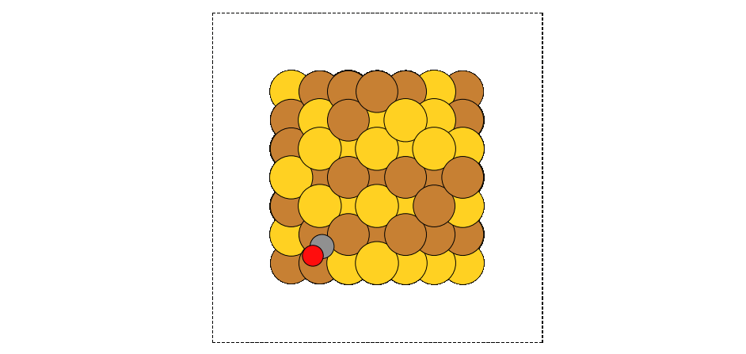
-
acat.build.patterns.symmetric_coverage_pattern(atoms, adsorbate, coverage=1.0, surface=None, height=None, min_adsorbate_distance=0.0)[source]¶ A function for generating representative symmetric adsorbate coverage patterns. The function is generalized for both periodic and non-periodic systems (distinguished by atoms.pbc).
- Parameters
atoms (ase.Atoms object) – The nanoparticle or surface slab onto which the adsorbates are added. Accept any ase.Atoms object. No need to be built-in.
adsorbate (str or ase.Atom object or ase.Atoms object) – The adsorbate species to be added onto the surface. For now only support adding one type of adsorbate species.
coverage (float, default 1.) – The coverage (ML) of the adsorbate (N_adsorbate / N_surf_atoms). Support 4 coverage patterns (0.25 for p(2x2) pattern; 0.5 for c(2x2) pattern on fcc100 or honeycomb pattern on fcc111; 0.75 for (2x2) pattern on fcc100 or Kagome pattern on fcc111; 1 for p(1x1) pattern. Note that for small nanoparticles, the function might give results that do not correspond to the coverage. This is normal since the surface area can be too small to encompass the coverage pattern properly. We expect this function to work well on large nanoparticles and surface slabs.
surface (str, default None) – The surface type (crystal structure + Miller indices). For now only support 2 common surfaces: fcc100 and fcc111. If the structure is a periodic surface slab, this is required. If the structure is a nanoparticle, the function only add adsorbates to the sites on the specified surface.
height (float, default None) – The height of the added adsorbate from the surface. Use the default settings if not specified.
min_adsorbate_distance (float, default 0.) – The minimum distance between two atoms that belongs to two adsorbates.
Example
To add a 0.5 ML CO coverage pattern on a cuboctahedron:
>>> from acat.build.patterns import symmetric_coverage_pattern >>> from ase.cluster import Octahedron >>> from ase.visualize import view >>> atoms = Octahedron('Au', length=9, cutoff=4) >>> atoms.center(vacuum=5.) >>> pattern = symmetric_coverage_pattern(atoms, adsorbate='CO', ... coverage=0.5) >>> view(pattern) 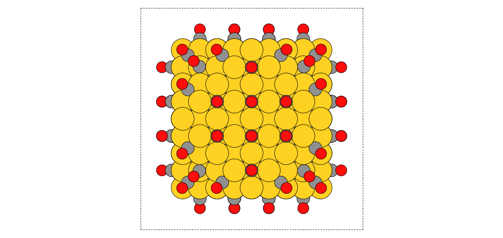
To add a 0.75 ML CO coverage pattern on a fcc111 surface slab:
>>> from acat.build.patterns import symmetric_coverage_pattern >>> from ase.build import fcc111 >>> from ase.visualize import view >>> atoms = fcc111('Cu', (8, 8, 4), vacuum=5.) >>> atoms.center() >>> pattern = symmetric_coverage_pattern(atoms, adsorbate='CO', ... coverage=0.5, ... surface='fcc111') >>> view(pattern) 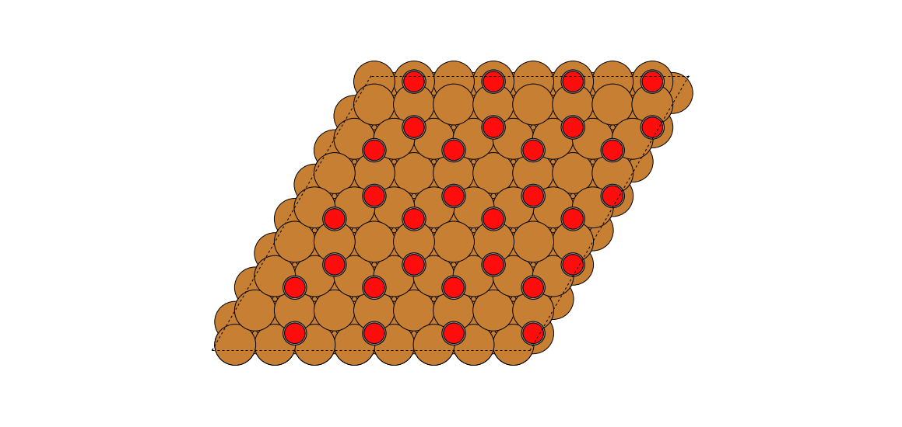
-
acat.build.patterns.full_coverage_pattern(atoms, adsorbate, site, surface=None, height=None, min_adsorbate_distance=0.0)[source]¶ A function for generating different p(1x1) adsorbate coverage patterns. The function is generalized for both periodic and non-periodic systems (distinguished by atoms.pbc).
- Parameters
atoms (ase.Atoms object) – The nanoparticle or surface slab onto which the adsorbates are added. Accept any ase.Atoms object. No need to be built-in.
adsorbate (str or ase.Atom object or ase.Atoms object) – The adsorbate species to be added onto the surface. For now only support adding one type of adsorbate species.
site (str) – The site type that the adsorbates should be added to.
surface (str, default None) – The surface type (crystal structure + Miller indices). If the structure is a periodic surface slab, this is required. If the structure is a nanoparticle, the function only add adsorbates to the sites on the specified surface.
height (float, default None) – The height of the added adsorbate from the surface. Use the default settings if not specified.
min_adsorbate_distance (float, default 0.) – The minimum distance between two atoms that belongs to two adsorbates.
Example
To add a 1 ML CO coverage pattern to the hcp sites on a icosahedron:
>>> from acat.build.patterns import full_coverage_pattern >>> from ase.cluster import Icosahedron >>> from ase.visualize import view >>> atoms = Icosahedron('Au', noshells=5) >>> atoms.center(vacuum=5.) >>> pattern = full_coverage_pattern(atoms, adsorbate='CO', site='hcp') >>> view(pattern) 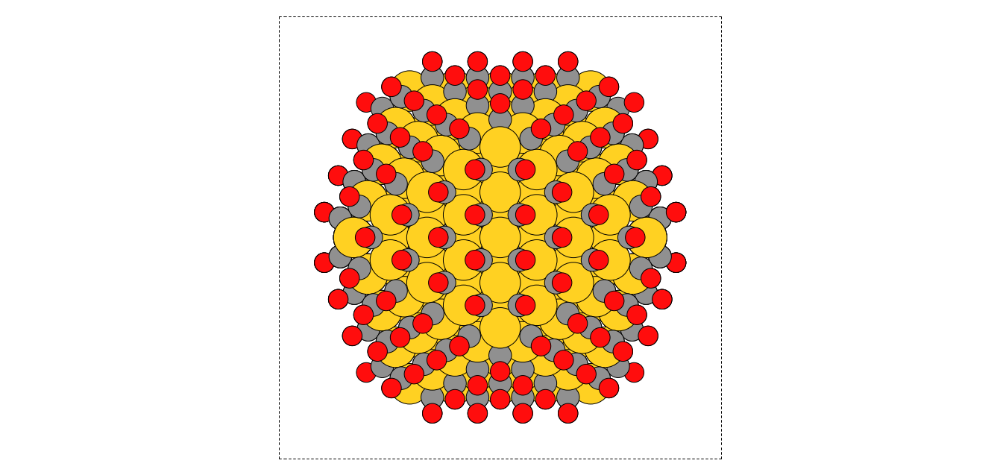
To add a 1 ML CO coverage pattern to the 3fold sites on a bcc110 surface slab:
>>> from acat.build.patterns import full_coverage_pattern >>> from ase.build import bcc110 >>> from ase.visualize import view >>> atoms = bcc110('Mo', (8, 8, 4), vacuum=5.) >>> atoms.center() >>> pattern = full_coverage_pattern(atoms, adsorbate='CO', ... surface='bcc110', site='3fold') >>> view(pattern) 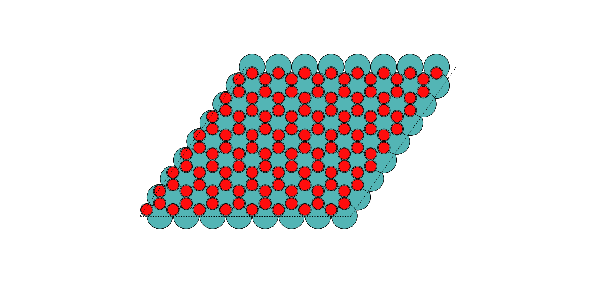
-
acat.build.patterns.random_coverage_pattern(atoms, adsorbate_species, species_probabilities=None, surface=None, min_adsorbate_distance=1.5, heights={'3fold': 1.3, '4fold': 1.3, '5fold': 1.5, '6fold': 0.0, 'bridge': 1.5, 'fcc': 1.3, 'hcp': 1.3, 'long-bridge': 1.5, 'ontop': 1.8, 'short-bridge': 1.5}, allow_6fold=False)[source]¶ A function for generating random coverage patterns with a minimum distance constraint. The function is generalized for both periodic and non-periodic systems (distinguished by atoms.pbc).
- Parameters
atoms (ase.Atoms object) – The nanoparticle or surface slab onto which the adsorbates are added. Accept any ase.Atoms object. No need to be built-in.
adsorbate_species (str or list of strs) – A list of adsorbate species to be randomly added to the surface.
species_probabilities (dict, default None) – A dictionary that contains keys of each adsorbate species and values of their probabilities of adding onto the surface.
surface (str, default None) – The surface type (crystal structure + Miller indices). If the structure is a periodic surface slab, this is required. If the structure is a nanoparticle, the function only add adsorbates to the sites on the specified surface.
heights (dict, default acat.settings.site_heights) – A dictionary that contains the adsorbate height for each site type. Use the default height settings if the height for a site type is not specified.
min_adsorbate_distance (float, default 1.5) – The minimum distance constraint between two atoms that belongs to two adsorbates.
allow_6fold (bool, default False) – Whether to allow the adsorption on 6-fold subsurf sites beneath fcc hollow sites.
Example
To add CO randomly onto a cuboctahedron with a minimum adsorbate distance of 5 Angstrom:
>>> from acat.build.patterns import random_coverage_pattern >>> from ase.cluster import Octahedron >>> from ase.visualize import view >>> atoms = Octahedron('Au', length=9, cutoff=4) >>> atoms.center(vacuum=5.) >>> pattern = random_coverage_pattern(atoms, adsorbate_species='CO', ... min_adsorbate_distance=5.) >>> view(pattern) 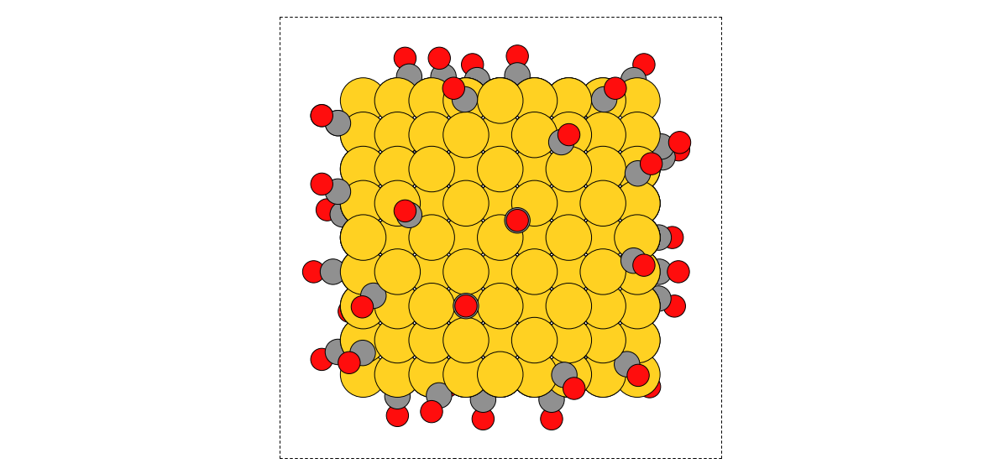
To add C, N, O randomly onto a hcp0001 surface slab with probabilities of 0.25, 0.25, 0.5, respectively, and a minimum adsorbate distance of 2 Angstrom:
>>> from acat.build.patterns import random_coverage_pattern >>> from ase.build import hcp0001 >>> from ase.visualize import view >>> atoms = hcp0001('Ru', (8, 8, 4), vacuum=5.) >>> atoms.center() >>> pattern = random_coverage_pattern(atoms, adsorbate_species=['C','N','O'], ... species_probabilities={'C': 0.25, ... 'N': 0.25, ... 'O': 0.5}, ... surface='hcp0001', ... min_adsorbate_distance=2.) >>> view(pattern) 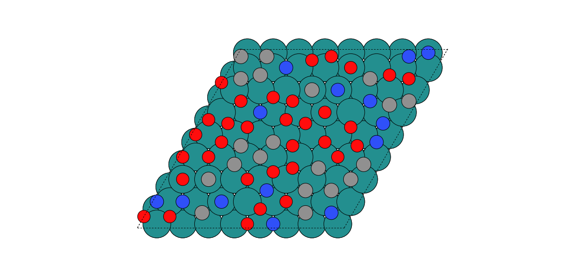
Generate chemical orderings¶
-
class
acat.build.orderings.SymmetricOrderingGenerator(atoms, species, symmetry='central', cutoff=0.1, composition=None, trajectory='orderings.traj', append_trajectory=False)[source]¶ Bases:
objectSymmetricOrderingGenerator is a class for generating symmetric chemical orderings for a bimetallic catalyst. As for now, only support clusters. Please align the z direction to the symmetry axis of the cluster.
- Parameters
atoms (ase.Atoms object) – The nanoparticle to use as a template to generate symmetric chemical orderings. Accept any ase.Atoms object. No need to be built-in.
species (list of strs) – The two metal species of the bimetallic catalyst.
cutoff (float, default 0.1) – Minimum distance (in Angstrom) that the code can recognize between two neighbor layers. If the structure is irregular, use a higher cutoff.
composition (dict, default None) – Generate symmetric orderings only at a certain composition. The dictionary contains the two speices as keys and their concentrations as values. Generate orderings at all compositions if not specified.
trajectory (str, default 'orderings.traj') – The name of the output ase trajectory file.
append_trajectory (bool, default False) – Whether to append structures to the existing trajectory.
Example
To generate 100 symmetric chemical orderings of a truncated octahedral NiPt nanoalloy:
>>> from acat.build.orderings import SymmetricOrderingGenerator as SOG >>> from ase.cluster import Octahedron >>> atoms = Octahedron('Ni', length=8, cutoff=3) >>> sog = SOG(atoms, species=['Ni', 'Pt'], symmetry='central') >>> sog.run(max_gen=100, verbose=True) 10 layers classified 100 symmetric chemical orderings generated 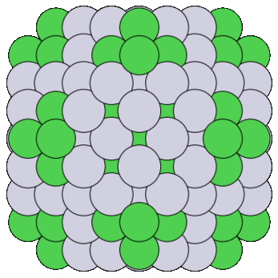
-
class
acat.build.orderings.RandomOrderingGenerator(atoms, species, composition=None, trajectory='orderings.traj', append_trajectory=False)[source]¶ Bases:
objectRandomOrderingGenerator is a class for generating random chemical orderings for a bimetallic catalyst. The function is generalized for both periodic and non-periodic systems.
- Parameters
atoms (ase.Atoms object) – The nanoparticle or surface slab to use as a template to generate random chemical orderings. Accept any ase.Atoms object. No need to be built-in.
species (list of strs) – The two metal species of the bimetallic catalyst.
composition (dict, None) – Generate random orderings only at a certain composition. The dictionary contains the two speices as keys and their concentrations as values. Generate orderings at all compositions if not specified.
trajectory (str, default 'patterns.traj') – The name of the output ase trajectory file.
append_trajectory (bool, default False) – Whether to append structures to the existing trajectory.
Example
To generate 100 random chemical orderings of a icosahedral Ni3Pt nanoalloy:
>>> from acat.build.orderings import RandomOrderingGenerator as ROG >>> from ase.cluster import Icosahedron >>> atoms = Icosahedron('Ni', noshells=5) >>> rog = ROG(atoms, species=['Ni', 'Pt'], ... composition={'Ni': 0.75, 'Pt': 0.25}) >>> rog.run(n_gen=100)